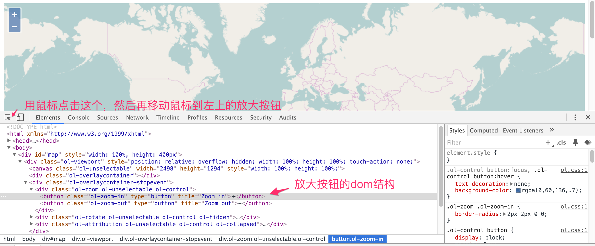

探究控件原理
在介绍后续的知识之前，先探究一下控件是如何做成的。 在chrome中打开一个最简单的地图例子，打开开发者工具面板，用工具栏最左边的元素选择器选择地图左上方的放大按钮，可以看到类似如下的界面： 
上图可以看到放大按钮完整的dom结构图，从而一窥究竟，按钮原来就是简单的HTML的元素，结合css的效果做出来的，可以看到放大按钮的css class为ol-zoom-in，紧接着的就是缩小按钮的节点，其css class为ol-zoom-out，他们的父节点也有对应的css class： ol-zoom。 我们可以在ol.css文件中找到这些class的定义，设置了相应的样式。 控件ui的原理是清楚了，那么对应的控件要响应一些鼠标或者按键操作，应该也就是添加响应的事件监听器就可以了。
对于具体怎么做的，我们可以从控件ol.control.Zoom的部分源码来分析：
// 设定放大缩小按钮的提示信息
var zoomInTipLabel = options.zoomInTipLabel !== undefined ?
options.zoomInTipLabel : 'Zoom in';
var zoomOutTipLabel = options.zoomOutTipLabel !== undefined ?
options.zoomOutTipLabel : 'Zoom out';
// 创建放大按钮的dom节点
var inElement = goog.dom.createDom('BUTTON', {
'class': className + '-in',
'type' : 'button',
'title': zoomInTipLabel
}, zoomInLabel);
// 并绑定鼠标点击事件的处理函数 handleClick_
ol.events.listen(inElement,
ol.events.EventType.CLICK, goog.partial(
ol.control.Zoom.prototype.handleClick_, delta), this);
......
// 函数定义如下
/**
* @param {number} delta Zoom delta.
* @param {Event} event The event to handle
* @private
*/
ol.control.Zoom.prototype.handleClick_ = function(delta, event) {
event.preventDefault(); // 阻止事件传递到下面的map
this.zoomByDelta_(delta); // 调用具体的方法进行放大
};
这个过程和我们平时的在界面上添加一个节点，再绑定事件处理函数，并没有什么差别，其他类似的控件也是一样的原理。这对我们来说，想改变ui样式，是非常容易的事，甚至可以改变它的默认行为。